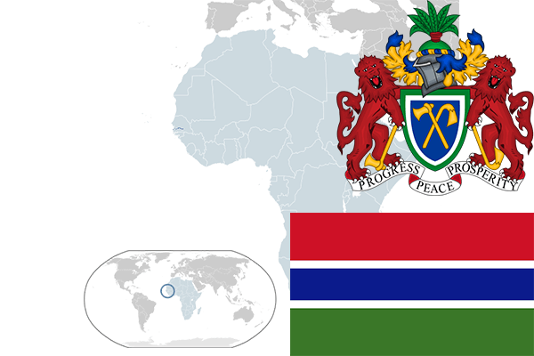

To`liq nomi: Gambiya Respublikasi
Region: G`arbiy Afrika
Qonunchilik shakli: Respublika
Mustaqillik kuni: 18-fevral 1965 - yil (Birlashgan Qirollikdan)
Poytaxt: Banjul
Maydoni: 10 380 km² (dunyoda 148 -o`rinda )
Chegaradosh davlatlari: Senegal
Aholisi: 1 878 999 (dunyoda 148 - o`rinda, 2013 -yil roʻyxat)
Aholi zichligi: 156 /km²
Aholining o`rtacha yoshi: 54,6 yil ( 56,5 ayollar, 52,7 erkaklar)
Rasmiy tili: ingliz tili
Dini: 90% musulmonlar, 9% xristian, 1% mahalliy dinlar
Pul birligi: gambiya dalasi
Telefon prefiksi: +220
Internet domen: .gm
Xalqaro tashkilotlarga a`zoligi: BMT (1965 – yildan)
Dengiz va okeanlarga chiqishi: Atlantika okeani,
YIM: Butun: $ 3,387 mlrd (2008 - yil roʻyxati)
Yirik shaharlari: Serekunda